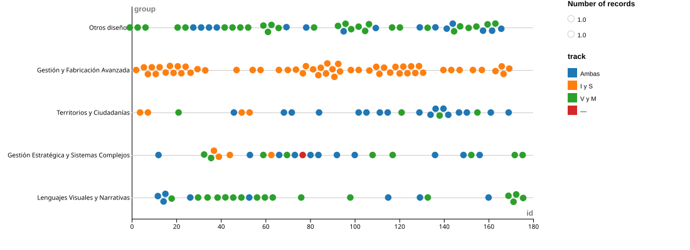
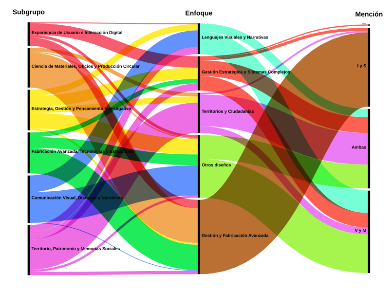

La malla curricular de Diseño en la Universidad de Chile promete flexibilidad. El plan de estudios entrega el grado de Licenciado/a en Diseño y, posteriormente, abre las puertas a tres salidas profesionales: el título con mención en Visualidad y Medios, con mención en Industrial y Servicios, o la opción de una titulación generalista y sin mención.
Esta tercera vía fue concebida estratégicamente para aquellos perfiles que buscan habitar en la frontera de ambas disciplinas, desdibujando los límites entre lo visual e industrial. Sin embargo, al contrastar las aspiraciones del programa con las decisiones reales de egreso, queda en evidencia una profunda grieta institucional: el camino del diseñador transdisciplinar tiende a desvanecerse en el último tramo.
A pesar de ser una alternativa plenamente vigente, la titulación sin mención es la opción menos colonizada por el alumnado. Al auditar el comportamiento histórico de los procesos de titulación recientes, la preferencia por los márgenes seguros de las etiquetas tradicionales es drástica.
La Realidad del Egreso
El siguente grafico presenta la cantidad de egresados bajo ambas menciones, y este camino generalista.
Esta marcada polarización en el diploma sugeriría, a primera vista, que el programa le hace falta un espacio común y que los estudiantes se fragmentan tempranamente. Sin embargo, esta conclusion es erronea. Al entrar a la carrera inicialmente, la carrera comparte un plan comun antes de la eleccion entre mencion.
Ademas de esto, una auditoría detallada a la base de datos de la oferta académica actual desmiente esto de forma categórica. Al analizar los 171 electivos únicos y vigentes que componen el tejido curricular de la carrera, descubrimos una realidad opuesta en la oferta: el encuentro no solo existe, sino que es un pilar masivo dentro de la escuela. Las asignaturas catalogadas formalmente bajo la etiqueta de "Ambas Menciones" compiten directamente en volumen con las ramas específicas; en varias areas compartidas entre electivos de la facultad: como Lenguajes Visuales y Narrativas.
La Oferta Real de Electivos
Para comprender cómo opera este ecosistema intermedio, es fundamental analizar hacia dónde apuntan sus contenidos. Al mapear el flujo de las asignaturas compartidas, se revela que estas no constituyen electivos aislados o accesorios; por el contrario, actúan como el núcleo conductor que alimenta los grandes enfoques contemporáneos del diseño moderno, vinculando varias areas de interes a ambas especializaciones, ademas de tomar un lugar importante como electivos obligatorios de la malla.

Al hacer un acercamiento analítico a este territorio común, la fisonomía de la oferta se vuelve aún más reveladora. Un desglose proporcional de las temáticas universitarias demuestra que el aula es, físicamente, un espacio de hibridación. A través de las dimensiones de las subcategorías lógicas, se evidencia que los estudiantes de distintas menciones cohabitan de manera masiva en áreas críticas como la gestión del valor, la sustentabilidad, el patrimonio y la complejidad sistémica, lugares donde la disciplina se vuelve indivisible.

El Embudo Invisible: ¿Por qué se pierde la hibridación?
Los datos expuestos configuran una paradoja pedagógica: la infraestructura transdisciplinar de la Universidad de Chile existe, es robusta y es cursada activamente por los alumnos a lo largo de su carrera; sin embargo, se extingue al momento de la graduación.
La raíz de esta discrepancia no habita en las aulas de las asignaturas electivas, sino en las reglas del juego del egreso y el entorno profesional. Aunque el estudiante experimenta un trayecto mixto durante sus años de formación, al enfrentarse al Proyecto de Título, las inercias del sistema académico y las demandas de un mercado laboral chileno altamente indexado obligan a una bifurcación apresurada. Nombrarse simplemente "Diseñador/a" suele percibirse en el medio externo como una falta de especialización en lugar de una fortaleza integradora. Así, la tercera salida se convierte en un trayecto invisible: un capital de aprendizaje real que termina siendo sacrificado en el último tramo en pos de la seguridad que otorga una nomenclatura tradicional.
Explorador de la Malla Electiva
A continuación, se dispone el archivo de la oferta de electivos vigentes. Utilice el sistema de filtrado para inspeccionar los nombres, enfoques y menciones de los cursos que sostienen el espacio de contacto disciplinar de la carrera.
| N° | Asignatura electiva | Mención | Subgrupo | Enfoque |
|---|
Fuentes
Copia de datos internos ofrecidas por Felipe Cortez, Jefe de carrera de Diseño en la Universidad de Chile. (s. f.). https://docs.google.com/spreadsheets/d/1BNokKHsoHyXJjmc5DKnSklThcN-8IFPzBwFFv6qv5CA/edit?usp=sharing/, Malla Curricular Diseño, Pregrado FAU (2024). https://fau.uchile.cl/dam/jcr:d387c00c-a191-4351-9a51-d9d7d94d413c/folleto-2024-DIS.pdf/ En la elaboración de esta pagina web se utilizaron herramientas de inteligencia artificial generativa. Google Gemini. Esta fue empleada en la realización de texto y asistencia para los distintos lenguajes de desarrollo web. Todo el contenido fue revisado y validado por las autoras, quienes asumen plena responsabilidad sobre el trabajo presentado.